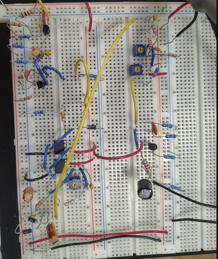
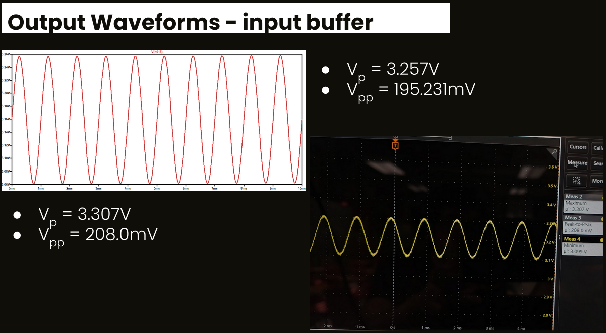
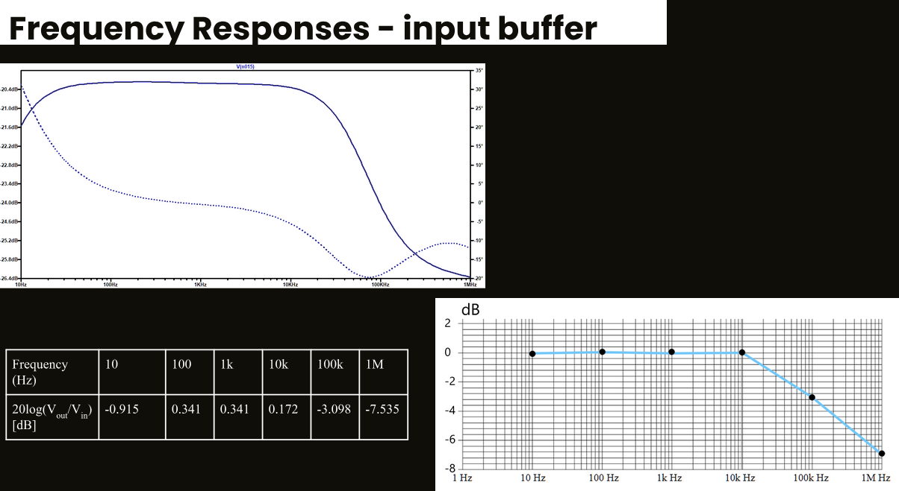
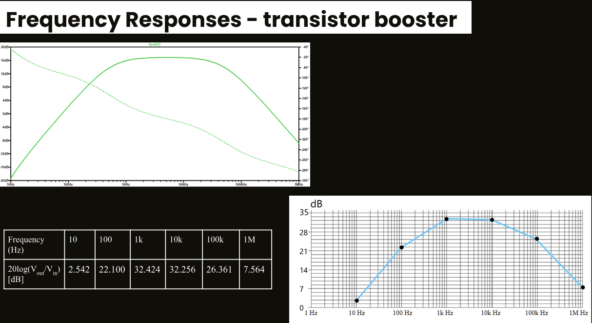
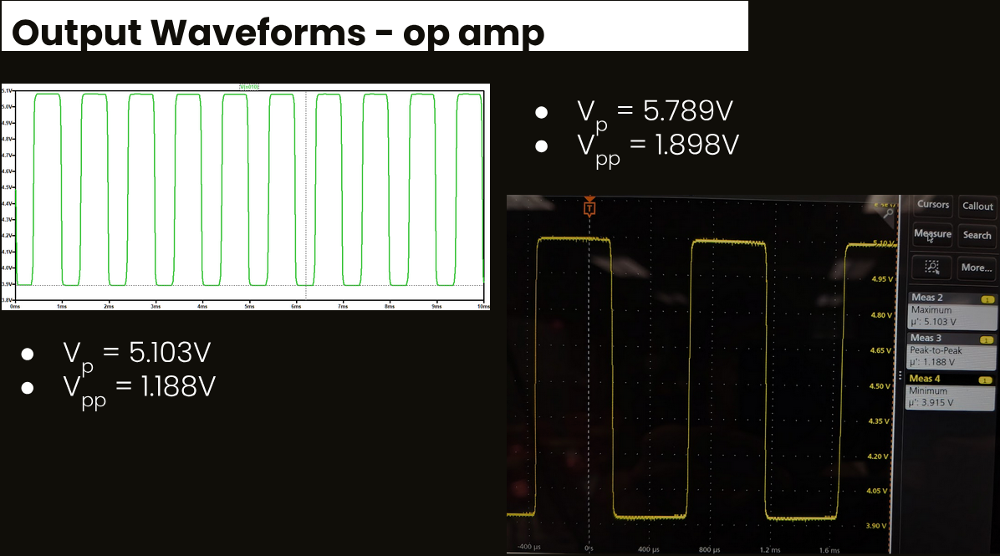
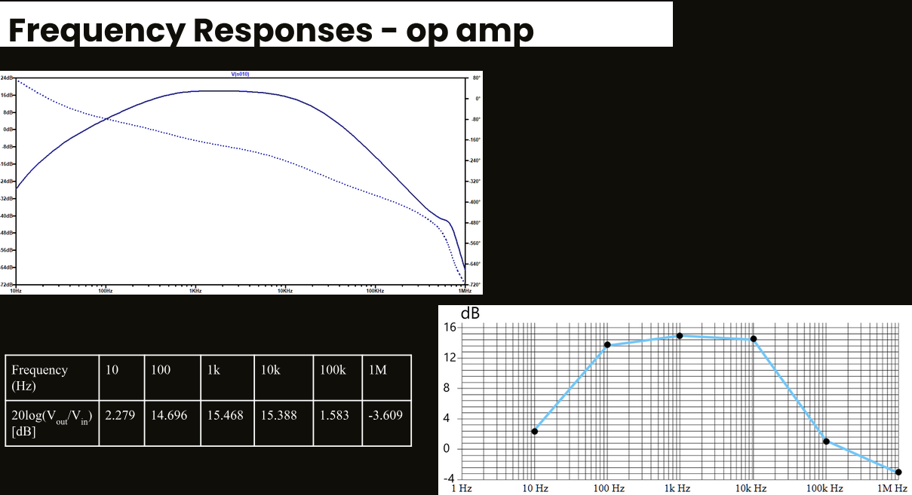
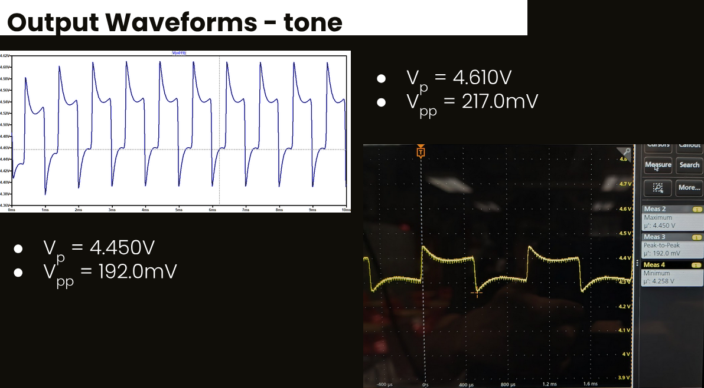
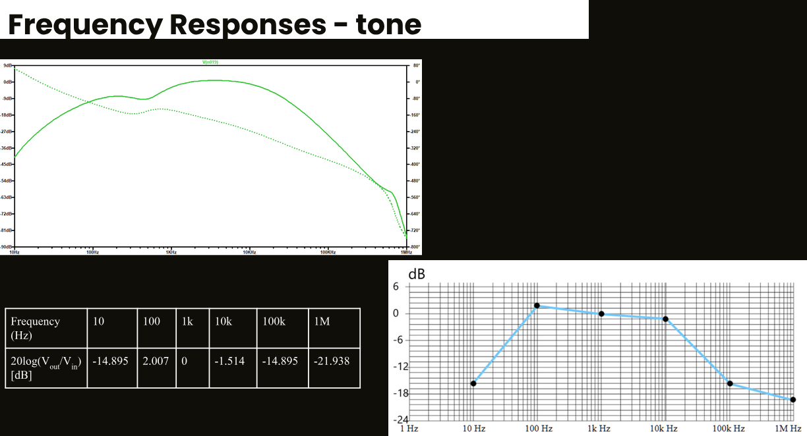
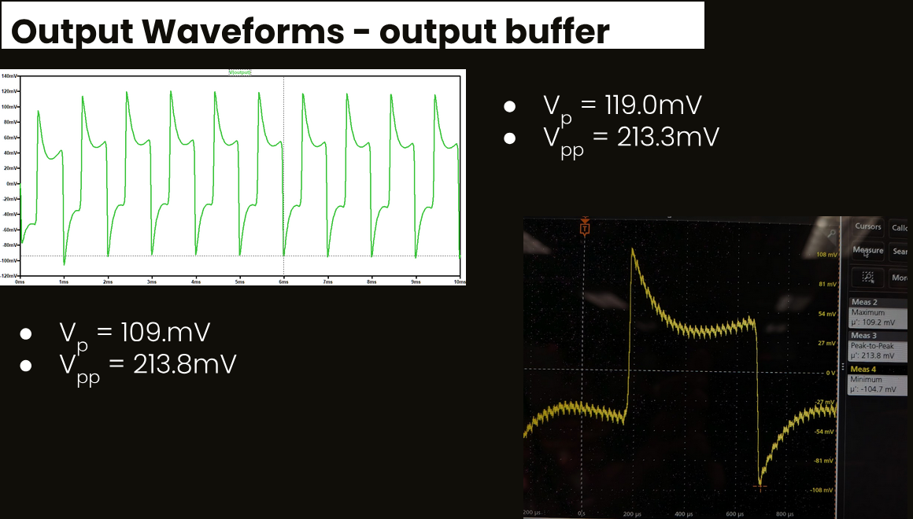
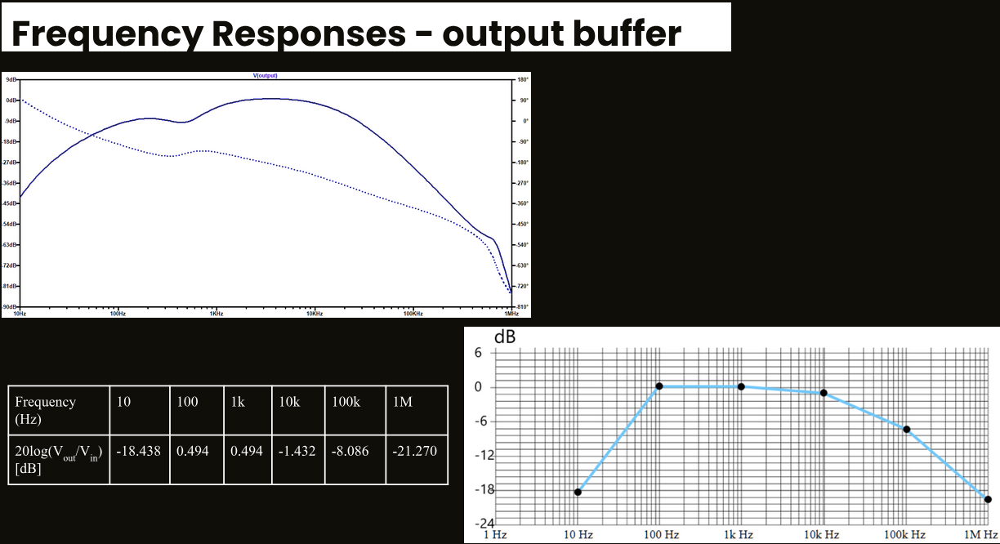

Overview
This project serves to demonstrate the practical implementation of various components and concepts considered throughout the duration of the course, the ultimate goal within this context being the distortion of an analog waveform to achieve a desired set of audible tonal characteristics. An electric guitar utilizes electromagnetic induction to generate a signal from mechanical input(s) of metal strings vibrating at a particular frequency. This generated signal is passed into the distortion “pedal” circuit utilized, such being emulated in this instance primarily through use of operational amplifiers and diodes to amplify and clip the signal, as well as potentiometers to shape the perceived tone based on the generated frequency responses. Additionally, BJTs are utilized for the purpose of preserving signal quality and amplifying said signals at particular points in the circuit.
Circuit Diagram and Function Breakdown
1. Power Supply & Voltage Divider
Functionally, this segment serves to generate a 4.5V virtual ground or bias voltage, this being used at particular points within the overall circuit, allowing the small AC input signal to be superimposed on the DC level. This then enables the device to respond ideally linearly and produce a larger, though undistorted, signal output. Such maximizes the peak-to-peak output signal before transistors enter saturation or cutoff modes.
The resistor serves to create the desired voltage division, the capacitors allow for stabilization of power supply lines in the case of utilizing sources such as consumer grade 9V batteries as is common for a majority of guitar pedals, and the diode protects against reverse polarity connections in the case power adapters are connected incorrectly.
Note that the figure possesses labels for both 9V and 4.5V, though only the former is an input voltage, the latter only acts as a net label for use throughout the circuit.
2. Input Buffer
- Vp = 8.337V
- Vpp = 8.234V
This step in circuit operates as an emitter-follower, with unity gain and high input impedance for the purpose of preserving signal quality and eliminating high frequency loss. . This buffer also helps isolate the guitar's input, reducing background noise. Additionally, there is a filtering out of low frequencies at around ~5Hz as a result of the capacitor, this being shown in the calculations below considerate of component impedance. The overall goal of this stage is to buffer the input signal, not yet considerate of the DC offset generated.
- fc = 1/(2πC1Zin) = 4.980Hz
- Zin= R1 +(R2\β*R3) = ~R2 = 470KΩ
- R3 << R4 & (β*10KΩ>>470KΩ)
- β = ~200
3. Transistor Booster
- Vp = 8.337V
- Vpp = 8.234V
This stage applies some amount of fixed filtering and signal boosting prior to the signals’ input into the operational amplifier sequence, as this will allow for more acceptable levels of voltage in the circuit’s remainder. The mentioned filtering consists of two high-pass filters at the beginning of the segment to cut out bass harmonics which would produce undesirable auditory output waveforms. Calculations may be seen below:
- f1 = 1/(2πC14R6) = 3.386Hz
- f2 = 1/(2πC15Z30) = 23.405Hz
The transistor acts as a common emitter amplifier and to some extent as a leaky integrator, with the voltage gain considerate of the topology being the collector resistance over the emitter resistance as seen below.
- A = RC/RE = 10k/22 = ~53dB
What must be considered is the effect of the feedback resistor and capacitor which which serve to lower the gain to roughly 35dB, allowing for better immunity to noise/temperature as well as oscillations. The supply voltage of 9V creates this gain, with soft clipping resulting as seen in figure 7.
4. Op-Amp Gain Sequence
- Vp = 5.789V
- Vpp = 1.898V
The operational amplifiers and following diodes are the most integral to the overall desired effect of the circuit. The beginning sees another high pass filter circuit which filters out a 23Hz frequency, though this filter is not intended as such, with the capacitor being used to couple the previous transistor gain stage and a moderate-high value resistor is required to bias the positive input pin of the first op-amp at a virtual ground. The diode prior to the op-amp is used to protect the input, as signals center roughly around 4.5V as a result of the bias and in case the signal coming from the previous stage attempts to drive the input below the negative rail, the diode clips at -0.7V, not allowing for dangerous voltages to be present at the non-inverting input.
The collector of the previous BJT is biased at roughly 5.8V, and drives the op-amp to a negative value if it goes into saturation, potentially damaging the component or at least taking time for the input stage to recover from being driven which causes undesired behavior in the output waveform. By the time the diode is conducted, the op-amp is already clipping, meaning that the first diode has minimal contribution to asymmetrical clipping or signal modification.
The first op-amp acts as a buffer, not adding or removing from the input signals, but interfacing the previous transistor booster with the second op-amp. This second op-amp is a non-inverting amplifier which boosts the signal up to 26.5 dB as seen below.
- Gop-amp max = 1 + (VR13)/(R14) = 1 +(100K/4.7K) = 22.3 (26.5dB)
- Gop-amp min = 1 + (0Ω)/( R13 ) = 1+(0K/4.7K) = 1 (0dB)
The clipping stage defines the output signal’s audible characteristics, providing a signature sound of “distortion”, built using two diodes in parallel with opposing orientations which shunt the signal to AC ground (4.5V), thus producing a hard clipping effect. This opposes soft clipping by placing the diodes on the feedback loop of the op-amp which are used in other commercially available effects pedals. The 100k potentiometer simulated by two 50k resistors in sequence may be utilized to magnify the degree of this clipping. The position of the potentiometer additionally affects the frequencies cut by the high-pass filter as seen below.
- fccmax = 1/(2πC7R13) = 1/(2*3.14*0.47u*4.7K) = 72Hz
- fccmin = 1/(2πC7(R13+VR1)) = 1/(2*3.14*0.47u*104.7K) = 3Hz
5. Tone & Level
- Vp = 4.610V
- Vpp = 217.0mV
The circuit utilizes a passive tone control style, taking out “middle” frequencies and attenuating the lows and highs in correspondence to potentiometer’s value. The segment consists of two frequency filters, a fixed low pass filter formed with C7 and R13 (fc = 234Hz) and a fixed high pass filter is formed using C8 and R14 (fc = 1063Hz), with the first 20k potentiometer (simulated by two 10k resistors in sequence) being used to mix the signals. The second 100k potentiometer (simulated by two 50k resistors in sequence) regulates the level by bleeding part of the signal to AC ground.
6. Output Buffer
- Vp = 119.0mV
- Vpp = 213.3mV
The final stage operates very similarly to the input buffer, with the intention herein being to keep a low output impedance for better signal integrity within the chain between the guitar’s pickups and ultimate amplifier. The unity gain buffer is implemented with an emitter-follower topology, with a 10K emitter resistor biasing from the 4.5V source of the two 1M resistors in parallel. C12 and R20 create a high pass filter (fc = 2.842Hz), though it serves to remove the DC levels so the transistor may operate as intended. C13 and R23 form a second high pass filter (fc = 1.6Hz) below the audible spectrum, with the purpose purely benign to remove the DC levels form the final output signal.
Implementation and Testing
Note: All measurements utilize a 200mVpp input voltage source at a frequency of 1kHz

1. Input Buffer


2. Transistor Booster

3. Op-Amp Gain Sequence


4. Tone & Level


5. Output Buffer


Issues Encountered
The number of issues encountered throughout the project would be relatively minimal considering the research done beforehand to ensure compatibility and stability of components with one another as well as ensuring a base understanding of component/topological functions prior to experimentation. The two notable issues would be the simulation of a potentiometer within the LTspice software as well as an inability to attain components of particular values, namely capacitors. The former would hinder the analysis of the circuit’s outputs at various values, though time constraints would permit the approximation of middle-point values as discussed in respective sections. The latter would lead to a brief period of troubleshooting considering there being initial confusion regarding output of the waveform being dissimilar from those simulated, though this would ultimately prove to be the result of incorrectly labeled capacitors, or those that were too dissimilar in value.
Analysis and Conclusion
The experimental outcome(s) at each segment would prove rather similar to those seen in simulation, with both the amplitude and shape of waveforms at each point being so to the point such may be explained easily by discrepancy in particular component specifications or values as well as the inherent differences between theoretical and experimental execution. Additionally, the frequency responses, whilst dissimilar in regards to value, see characteristic similarities at nearly every stage, though the consideration of such is inherently limited as a result of certain ranges falling outside the audible range. Additionally of note is the fact that the overall circuit appears to be non-linear in regards to phase in simulation, though the ability to comment on this is limited considering the lack of emphasis given to such throughout the course as well as within utilized sources. All said, the similarities between simulation and experimental execution would be rather assistive in regards to value verification and ensuring the project’s demonstration would operate as intended.
This project would seemingly be an appropriate culmination of not only the combined practical applications of multiple electronic elements utilized throughout the course, but the considerations required for such regarding consumer electronics. This is so as protections and characteristics considerations would be less necessary in an academic context. Additionally, although there would be slight hindrance in the seeking of components, research regarding functionality therein would aid greatly in quickly remedying any discrepancies.
The relative ubiquity of effect pedals amongst the musician community would allow for the design implemented herein to be extrapolated upon in practical future works if desired, demonstrating an understanding of the effects particular components have on a worked theoretical and practical level.